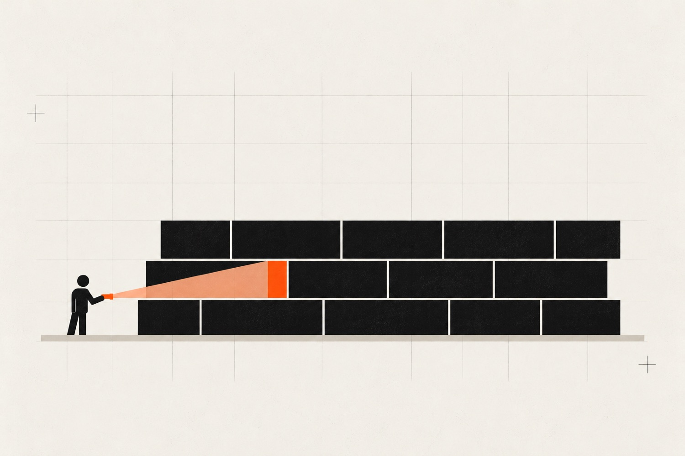

Find it before they do.
Penetration testing, vulnerability assessment, disaster recovery planning, advanced persistent threat simulation, and whitebox security review for the AI-native and vibe-coded stack. SA-based, compliance-aware, no offshore handoffs.

- Services
- Five, one team
- Based in
- Johannesburg, no offshore handoffs
- Engagements
- 3 days to 12 weeks
- Pentest retest
- Free within 30 days
A pentest tests whether you can be broken into. An APT simulation tests whether anyone would notice.
Five services cover the ground between those two questions, from a vulnerability scan measured in days to a red team measured in weeks. The same Johannesburg team runs all of them.
Five ways to test the stack.
From a single web app to the whole organisation. Every engagement is scoped to its target, and the length depends on the depth.
- 01Penetration Testing Black-box, grey-box or white-box. Manual exploitation with working proofs-of-concept. 1 to 3 weeks
- 02Vulnerability Assessment Broad scanning across infrastructure, apps and cloud, triaged by hand. 3 to 5 days or monthly
- 03Disaster Recovery Planning Targets, runbooks and a failover your team has actually rehearsed. 2 to 6 weeks
- 04APT Simulation Real adversary playbooks, run for weeks, to test detection and response. 2 to 12 weeks
- 05Vibe-Coded Whitebox Review For apps built mostly by an LLM. Review only, or review and remediate. 1 to 6 weeks
What each engagement covers.
-
01 · Black-box, grey-box, or white-box
Penetration Testing.
A structured attempt to break in. We pick the same paths a real attacker would: exposed endpoints, weak auth, leaked secrets, misconfigured cloud. You get a report ranked by exploitability and business impact, plus working proofs-of-concept for every finding above informational.
Scope a pentestPer engagement
Scoped per scope, 1 to 3 weeks
- Web app, mobile app, API, or cloud-infra scope
- OWASP Top 10 + business-logic abuse cases
- Manual exploitation, not just a Nessus dump
- Findings ranked by exploitability and impact
- Working PoCs for every High and Critical
- Remediation guidance + free retest within 30 days
-
02 · Continuous or point-in-time
Vulnerability Assessment.
Less surgical than a pentest, much broader. Authenticated and unauthenticated scanning across your infrastructure, applications, and cloud workloads. We tune scanners to your stack, triage findings by hand to cut the false positives, and tell you what to fix first.
Point in time
Scoped per environment, 3 to 5 days
- Network, external attack surface, and cloud-config scan
- Manual triage on every High and Critical
- Prioritised remediation list
- Executive summary for the board pack
Continuous
Monthly retainer
- Weekly scans across all assets
- Authenticated scanning with credentials we manage
- SLA-driven triage and ticket creation in your tracker
- Monthly trend report: are you closing faster than you open
- Quarterly review with engineering and risk
-
03 · Plan, document, rehearse
Disaster Recovery Planning.
Most companies have a backup. Almost none have ever restored from it under pressure. We define your RTO and RPO targets, design backup and failover architecture against those targets, write the runbooks, and then run tabletop exercises with the team that would actually push the buttons at 02:00.
Per build
Scoped per environment, 2 to 6 weeks
- Business impact analysis (what costs us money when it's down)
- RTO and RPO targets per system, signed off by stakeholders
- Backup architecture: immutable, geo-redundant, tested
- Failover runbooks written in plain English
- Tabletop exercise with the on-call team
- Live failover rehearsal where the architecture supports it
-
04 · Red team · Real adversary playbooks
Advanced Persistent Threat Simulation.
We emulate the playbooks of real adversary groups (initial access, persistence, lateral movement, exfiltration), live alongside your environment for weeks, and report on what your detection and response actually caught versus what walked past untouched.
Focused engagement
Scoped per goal, 2 to 4 weeks
- Single objective: e.g. exfiltrate customer PII
- Realistic initial-access path (phishing, exposed cred, supply chain)
- Persistence, lateral movement, privilege escalation
- Post-engagement debrief with SOC and engineering
Full red team
Scoped per environment, 6 to 12 weeks
- Multi-objective campaign across the org
- Emulation of specific threat actors (e.g. FIN7, APT29)
- Purple-team handoff: every TTP mapped to MITRE ATT&CK
- Detection and response gap report
- Rebuild engagement after defenders patch the gaps
-
05 · For AI-generated and prototyped apps
Vibe-Coded Whitebox Review.
If your app was built mostly by an LLM, in a weekend, or by someone who "didn't think about auth yet," this is for you. We do a full whitebox review of the codebase, the deployed environment, and the AI-specific failure modes: prompt injection, secrets in prompts, agentic action sprawl, unscoped tool use. We don't just tell you what's wrong, we fix it.
Review only
Scoped per codebase, 1 to 2 weeks
- Auth, authz, session handling, password and key storage
- Injection paths (SQL, command, prompt, template)
- Secret management, API keys, env handling
- Cloud configuration: buckets, IAM, network exposure
- AI-specific: prompt injection, tool sprawl, jailbreak surface
- Findings report with severity, exploitability, and fixes
Review + remediate
Scoped per codebase, 2 to 6 weeks
- Everything in Review only
- We write the patches, you ship them
- Hardening of CI/CD, dependency hygiene, SBOM
- Add or fix the eval harness for AI components
- 30-day rebuild check after remediation lands
- Hand-off doc so your team can run this themselves next time
Need compliance, KYC, or audit-grade logging built in?
Our AI services practice ships document agents and decision systems for FICA, KYC, and AML workflows. If security and compliance are the same project, we'll scope them together.
Not sure which one applies?
Most engagements start with a 30-minute scoping call. We'll tell you which of the five services actually applies and which would just be theatre.